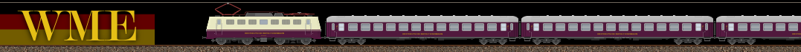
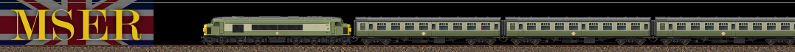
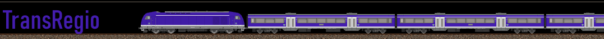
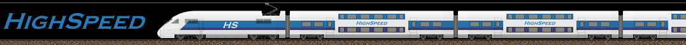
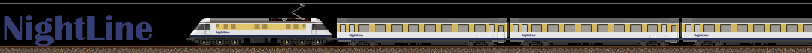
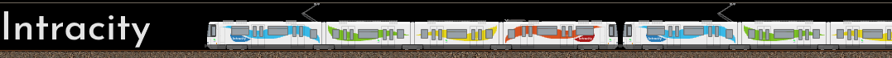
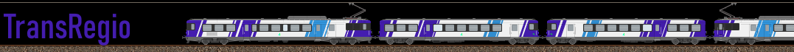
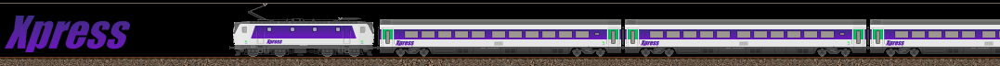
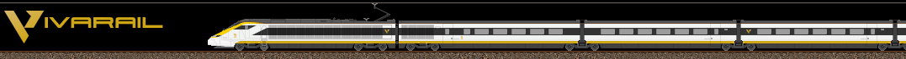

Histoire et contexte général de la MLTC
DISCLAIMER : RP Fantaisiste
La MLTC évolue dans un univers fictif. Il est possible que certains éléments soient volontairement très éloignés de la réalité et/ou improbables.
Contexte général : Le monde du Mathlyens
La MLTC Railways est une compagnie ferroviaire desservant principalement le Mathlyens, union politico-économique plus ou moins comparable à l’Union Européenne dans notre réalité. Le Mathlyens comporte en son sein 12 états : la France, le Royaume-Uni, le Benelux, l’Allemagne, le Danemark, l’Espagne, l’Italie, l’Autriche, la République Tchèque et la Suisse.
Il a été fondé en 1955 par le traité de Londres instituant la Communauté du Mathlyens et comportait à son origine la France, le Royaume-uni, l’Allemagne de l’Ouest, le Benelux et l’Italie. Sa traduction anglaise Mathly est à l’origine de l'appellation Mathly Travel Company.
Il est important de distinguer la MLTC Railways, branche ferroviaire de l’entreprise, du groupe MLTC dans son ensemble.
La Mathly Travel Company est un conglomérat multinational public-privé chargé de la coordination des transports dans tout le Mathlyens. Il supervise plusieurs filiales spécialisées dans les différents modes de transport, avec pour objectif de faciliter l’intégration régionale par une offre multimodale cohérente, efficace et transfrontalière. Voici les principales entités sous l’égide du groupe MLTC :
- MLTC Railways : transport ferroviaire de voyageurs, réseau principal du continent ;
- Mathlines : compagnie de bus longue distance, complémentaire au rail ;
- Mathly Alliance Airlines (MAA) : réseau aérien régional et intercontinental ;
- Mathly Cruises (MC) : croisières et liaisons maritimes intra-Mathlyens ;
- Mathly Cargo Company (MLCC) : transport de fret (ferroviaire, routier, aérien et maritime);
- Mathly Union Post (MLUP) : services de courrier.
Dans le langage courant, et par simplification, le terme MLTC est souvent employé pour désigner la branche ferroviaire du groupe (MLTC Railways), bien que celle-ci ne soit qu'une filiale parmi d'autres.
Les prémices de la MLTC
Malgré l’ambition portée dès les débuts du Mathlyens de construire un réseau de transport intégré et cohérent à l’échelle continentale, la réalité politique et logistique s’est avérée bien plus complexe que prévu. Des plans sont formulés dès 1955 pour créer une infrastructure de transport commune, mais rapidement, le projet d’unification complète est freiné par des coûts trop élevés et des intérêts divergents entre États membres.
Toutefois, l’ambition d’unifier les réseaux ferroviaires des pays membres demeure. Plusieurs projets sont alors rapidement étudiés pour donner corps à cette ambition :
1
Le premier, le plus ambitieux, propose la création d’une compagnie ferroviaire unique pour l’ensemble du Mathlyens. Ce projet est toutefois rapidement abandonné, en raison de difficultés de mise en œuvre majeures, tant techniques que politiques, et d’un coût jugé trop élevé pour les jeunes institutions de l’union.
2
Le deuxième projet envisagé repose sur la création d’une coentreprise regroupant les compagnies nationales des chemins de fer de France, du Royaume-Uni, de l’Allemagne de l’Ouest, de la Belgique, du Luxembourg, des Pays-Bas et de l’Italie. Toutefois, cette idée est rapidement abandonnée, car trop proche dans sa conception du projet Trans-Europ-Express (TEE), alors en cours de développement à l’échelle européenne. Elle ne correspond pas non plus à la vision plus vaste portée par le Mathlyens : celle d’un réseau véritablement intégré, et non d’un simple service international.
3
Un troisième projet voit alors le jour, plus structurant à long terme. Il consiste à fonder trois compagnies ferroviaires interrégionales, conçues dès l’origine pour dépasser les frontières nationales tout en conservant une implantation géographique forte.
C’est finalement ce dernier projet qui sera retenu et mis en œuvre. Trois compagnies interrégionales sont ainsi créées, chacune couvrant une grande zone du Mathlyens et jouant un rôle clé dans l’intégration ferroviaire du continent. Les voici :
-
CCFM - Compagnie des Chemins de fer du Mathlyens
Fondée en 1958 dans le cadre du plan de transport du Mathlyens, elle est la première compagnie ferroviaire créée et détenue par l'autorité du Mathlyens. Ayant pour cible principale le marché français et quelques zones limitrophes de Belgique, du Luxembourg, la base de son parc matériel provient en majeure partie de celui de la SNCF.
-

WME - Westdeutsche Mathly Eisenbahn
Fondée en 1958 peu après la création de la CCFM et basée en RFA, elle a pour objectif de desservir l’Allemagne de l’Ouest et les zones limitrophes.
-

MSER - Mathly Southern England Railways
Fondée en 1958, la MSER se substitue à la British Rail dans le sud du Royaume-Uni et obtient une partie de son parc. Elle est également en charge des différents ferrys-ferroviaires qui relient France et Angleterre.
Chacune de ces compagnies adopte une gouvernance semi-publique, reposant sur un financement mixte États-Mathlyens, et opèrent en parallèle des opérateurs nationaux. Peu à peu, ces compagnies mathlyéennes deviennent les concessionnaires attitrés de portions entières du réseau, notamment sur les axes transfrontaliers ou d’intérêt stratégique. C'est celui-ci qui est donc choisi.
Bien que limitées dans leur rayonnement initial, elles posent les bases d’une future intégration ferroviaire du continent et constituent les précurseurs directs de la MLTC Railways, fondée plusieurs décennies plus tard.
L’intégration complète des FS et de la NS au sein de compagnies dédiées, placées sous la gestion directe de l’autorité du Mathlyens, figurait initialement dans le plan de transport. Ce projet ambitieux a toutefois été abandonné par la suite.
Une unification tardive
Durant les décennies suivantes, plusieurs initiatives voient le jour de manière fragmentaire, mais le projet global est peu à peu relégué au second plan dans l’agenda politique. Ce n’est qu’au début des années 1990, dans un contexte de relance économique et d’approfondissement de l’intégration du Mathlyens, que l’unification des transports refait surface comme un objectif stratégique majeur. Les enjeux de mobilité, de connectivité transfrontalière et de compétitivité face aux géants privés du transport poussent alors les autorités du Mathlyens à relancer sérieusement le projet.
C’est dans ce contexte que le groupe MLTC (Mathly Travel Company) voit officiellement le jour en 1999, avec la fondation de sa première filiale opérationnelle, Mathly Alliance Airlines, dédiée au transport aérien régional et inter-capitales. Ce lancement marque la naissance d’un groupe de transport multimodal à l’échelle mathlyéenne.
Deux ans plus tard, en 2001, c’est la branche ferroviaire du groupe, MLTC Railways, qui est fondée à son tour, à l’issue de la fusion de la CCFM, de la WME et de la MSER. Cette fusion donne naissance à une entité ferroviaire de grande envergure, opérant sur la majeure partie du territoire mathlyéen et jouant un rôle central dans la structuration du réseau continental.
Par la même occasion, la MLCC nouvellement créée reprend l’ensemble des activités de fret ferroviaire précédemment assurées par les trois anciennes compagnies.
Expansion du réseau
Le réseau de la MLTC est géré par MLTC Railways Infrastructures (simplifié en MLTC Infrastructures). A sa création, il est composé du réseau français, du réseau belge, du réseau luxembourgeois, du réseau allemand ex-RFA et du sud du réseau anglais. À ce stade, la MLTC ne couvre donc qu’une portion des pays membres du Mathlyens, qui sont principalement les fondateurs historiques de l’union. Une phase d’expansion du réseau est donc entamée dès 2001 :
2001
Intégration complète du réseau allemand
La fondation de la MLTC permet l'intégration des anciennes régions de la RDA, dont l’intégration par la WME avait été différée dans l’attente du projet MLTC.
2002
Entrée en Italie
L’un des premiers jalons majeurs de l’expansion survient avec le lancement des services vers le nord de l’Italie, notamment jusqu’à Milan. Ce développement marque la première percée significative de la MLTC en dehors des zones historiquement intégrées.
2005
Intégration de la Suisse et de l'Autriche
En 2005, la MLTC étend ses opérations sur certaines lignes transalpines et alpines. En Suisse, l'accent est mis sur des services transfrontaliers, notamment autour de Genève, Bâle et Zurich. En Autriche, la compagnie obtient des concessions sur des corridors internationaux, principalement orientés vers l’Allemagne et l’Italie.
2007
Renforcement au Royaume-Uni
La MSER voit son périmètre élargi vers le centre de l’Angleterre, notamment autour de Birmingham et Oxford. Des coopérations avec des autorités locales permettent d’augmenter l’offre régionale sous la bannière MLTC.
2008
Premiers services au Danemark
La MLTC débute des liaisons dans la péninsule danoise, d'abord sous forme de trains transfrontaliers depuis l’Allemagne, puis par la reprise progressive de lignes autour des princiaples villes danoises.
2010
Expansion en République Tchèque
L’entrée dans ce marché d’Europe centrale se fait par étapes : d’abord par des dessertes internationales depuis Vienne et Munich, puis par l’obtention de concessions dans la région de Bohême.
2012
Intégration de l’Espagne
Dernier jalon de cette première phase d’expansion, l’Espagne rejoint le réseau MLTC avec le lancement de lignes depuis la France vers Barcelone, puis progressivement vers Madrid. La MLTC devient ainsi présente dans l’ensemble des 12 États membres du Mathlyens.
Cette croissance éclair est rendue possible par une véritable stratégie active d’accords bilatéraux entre les États membres, permettant l'harmonisation les normes technique et une interopérabilité accrue. En 2012, la MLTC Railways atteint son objectif d’épine dorsale du transport ferroviaire mathlyéen, assurant une large part des liaisons régionales et transfrontalières dans tout le bloc.
Services de la MLTC Railways
Lors de sa création en 2001, la MLTC structure son offre autour de quatre grands services ferroviaires, hérités des trois compagnies fondatrices (WME, CCFM, MSER) :
-

InterCity (IC)
Service de grandes lignes regroupant les principales liaisons nationales et transfrontalières. Il s’appuie sur l’héritage des services Fernzug de la WME, Horizon de la CCFM et Mainline de la MSER, avec des trains rapides, généralement sans arrêt intermédiaire majeur, assurant la connexion entre les grandes villes du Mathlyens.
-

TransRegio (TR)
Service régional classique desservant les villes moyennes, bourgs et zones rurales, avec des arrêts fréquents. Ce service assure une interconnexion fluide avec les services longue distance.
-

HighSpeed (HS)
Trains à grande vitesse au niveau national et international. Ce service provient de la fusion des services Blitz (WME) et Turbo (CCFM).
-

NightLine (NL)
Trains de nuit reliant les capitales et grandes villes sur des distances longues, à l’échelle nationale comme européenne. Ces trains proposent différentes gammes de confort, du siège inclinable aux cabines couchettes.
Refonte des services - 2012
Face à l’extension progressive du réseau, à l'évolution des besoins en mobilité et à l’hétérogénéité croissante des territoires desservis, la MLTC engage en 2012 une vaste refonte de ses services. Cette réorganisation vise à clarifier l’offre, à renforcer la lisibilité pour les usagers et à mieux intégrer les réalités urbaines, périurbaines et transnationales du Mathlyens.
Dès lors, les services MLTC sont restructurés en deux grandes catégories : services urbains & suburbains, et services nationaux & transfrontaliers.
Services urbains & suburbains
-
Frail
Service assurant une desserte cadencée et dense des grandes métropoles françaises entre les centres-villes et leurs périphéries, dans une logique de RER.
-

Urbahn
Service assurant une desserte cadencée et dense des grandes métropoles allemandes, autrichiennes et suisses entre les centres-villes et leurs périphéries, dans une logique de RER.
-

Intracity
Service ferroviaire intra-urbain destiné à renforcer les liaisons internes d’une même ville ou entre communes limitrophe. Il s’appuie sur du matériel léger adapté à une desserte fine.
Services nationaux & transfrontaliers
-

TransRegio (TR)
Maintenu dans la nouvelle grille, ce service régional assure la continuité du maillage territorial, connectant villes secondaires et zones rurales aux grandes lignes.
-

Xpress
Nouveau nom des anciens services InterCity, Xpress assure les liaisons rapides entre grandes villes d’un même pays. Certains services Xpress franchissent les frontières pour relier des villes frontalières.
-
HighSpeedXpress (HSX)
Successeur du service HighSpeed, HSX regroupe les trains à grande vitesse nationaux et internationaux. Le nom du service s’inspire de la marque Xpress, dont il reprend l’identité visuelle et les codes graphiques, afin d’assurer une cohérence avec l’offre rapide de la MLTC.
-

Vivarail
Nouveau service lancé lors de la refonte, Vivarail assure les liaisons grandes lignes internationales. Il propose un confort accru pour les longs trajets, avec des services à bord renforcés.
-
Nocrail
Successeur du service NightLine, Nocrail reprend les trains de nuit de la MLTC. Il assure des connexions nocturnes à l’échelle nationale et européenne.
Concernant le transport de marchandises, celui-ci est confié à la Mathly Cargo Company (MLCC), la filiale fret du groupe MLTC. En 2015, afin de mieux répondre aux besoins des territoires et d’optimiser l’utilisation des lignes secondaires, la MLCC lance un service spécifique dédié aux dessertes locales : RegioCargo. Ce service vise à maintenir une activité fret de proximité sur des axes secondaires, souvent délaissés par les grands opérateurs nationaux, et à renforcer l’intégration logistique des régions au réseau principal.
A venir : Présentation Livrée MLCC, RegioCargo et MLTC Infrastructures
Publication : 25/07/2025 - Dernière mise à jour : 25/07/2025